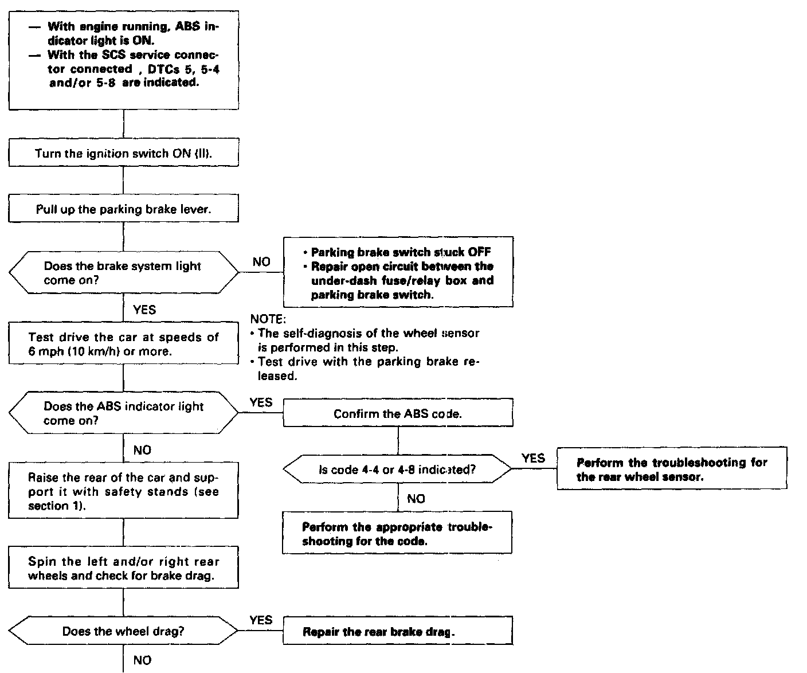
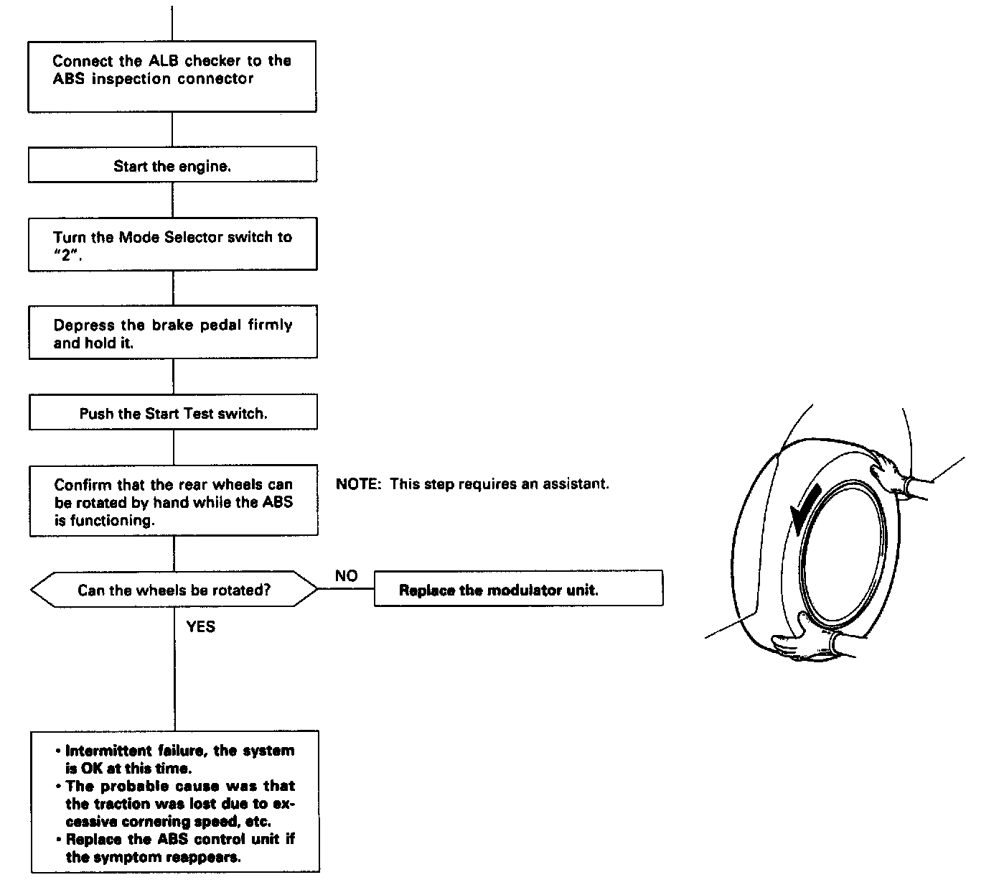

DTC 5-4
Part (1 Of 2):

Part (2 Of 2):

Diagnostic Trouble Code (DTC) 5 to 5-8: Rear Wheel Lock Diagnosis
The ABS control unit monitors the rear wheel sensor signals during the regular diagnosis (during driving). This diagnosis is not performed when the parking brake signal is ON.
The ABS control unit turns the ABS indicator light on if it detects no signal(s) from the rear wheel sensor(s) due to, for example, rear wheel lock.
Possible causes:
- Wheel spin during cornering
- Open circuit, internal short or short to the body ground in the wheel sensor system
- Rear brake drag
- Modulator does not decrease pressure properly
- Faulty ABS control unit